2023 – The Regeneration
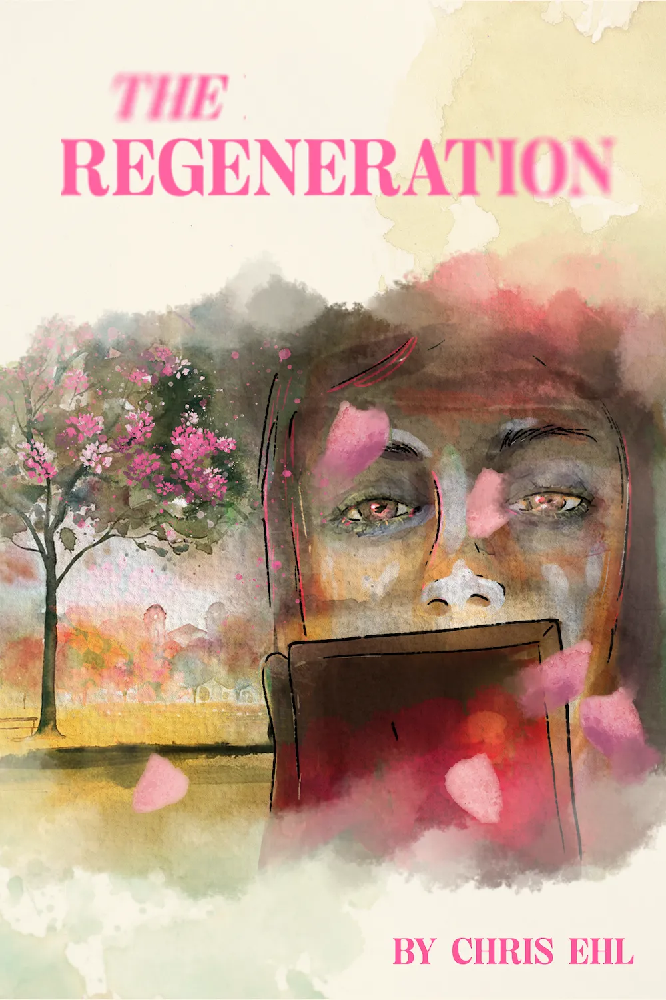
Download E-Book2018 – Don't talk. Do!
https://donttalkdo.ehl.do
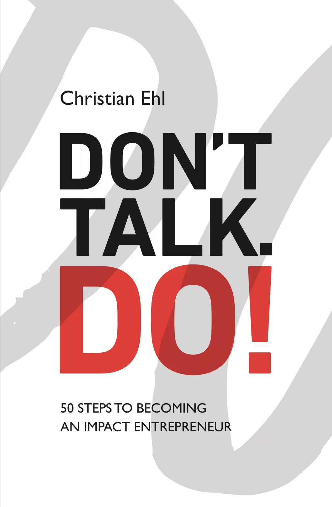
2017 – AI&U: Translating Artificial Intelligence into Business
Link
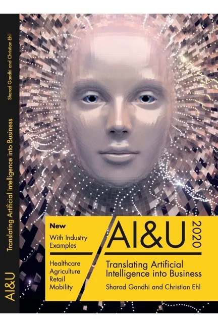
2011 – The Social Resource - Translating Social Media into Business
Link
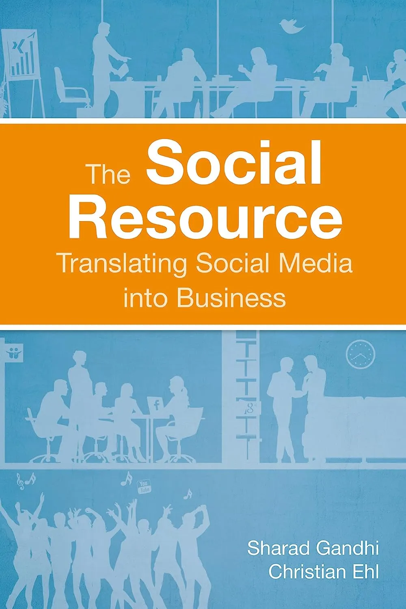
I am a cycling addict, entrepreneur, CEO, author, speaker, networker and humanity activist. I travel the world by bike, I meet people by the heart and I consult businesses by my experience in growth and problem solving.
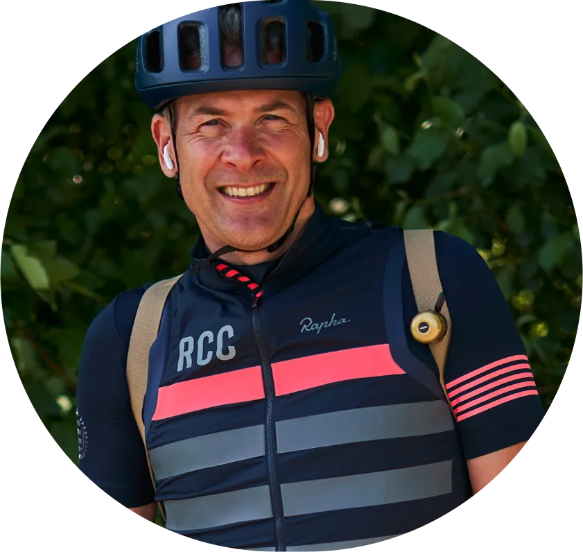
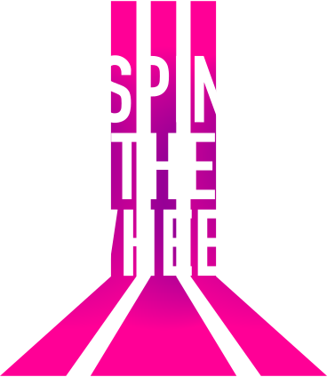
Spinning the wheel is my motivation for change. It’s my constant effort to keep moving, to push my projects forward, to keep people together and to make a difference in this world.
I truly believe we went wrong as a global society and we have many challenges to face. This is why I spin the wheel to connect businesses, people and try to network as much as possible. Because we are many. And only us can solve this together.
The first step is the hardest, people say.
I strongly disagree.
The first step is just a merely fleeting moment
One sequence of the wheel of life.
For me it’s more important to keep the wheel spinning.
To get up again after failing.
Growing on the way.
The first step might seem hard before you took it.
But the journey will be harder.
Because when you really want to achieve something,
You’ll need many first steps.
And help on your way.
To overcome all challenges.
To conquer yourself.
And to fall in love with what you do.
Again and again and again.
The first step doesn’t make you cross the finish line.
This is just the beginning of a journey.
Life is a constant movement.
And never just a ride made by the first step.
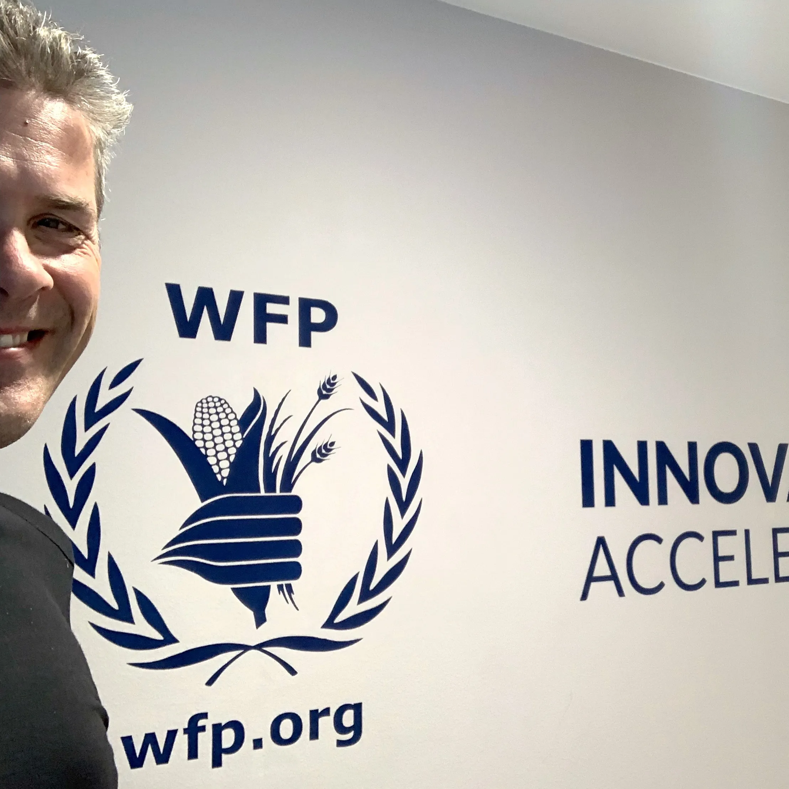
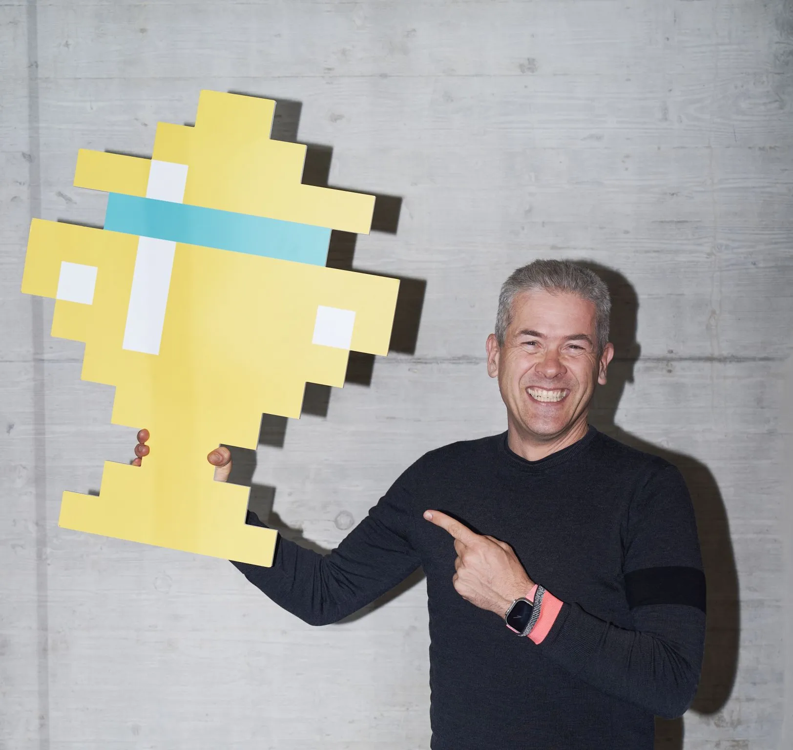
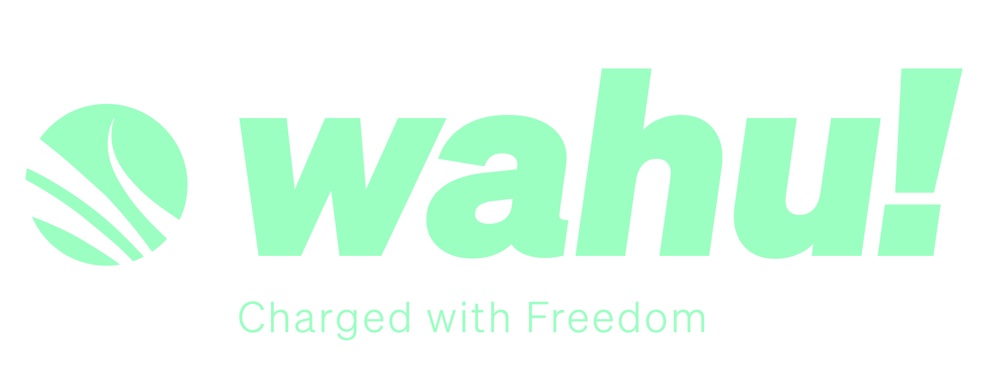
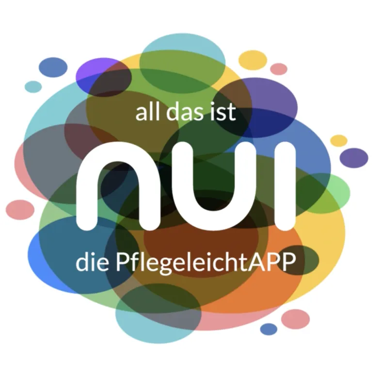
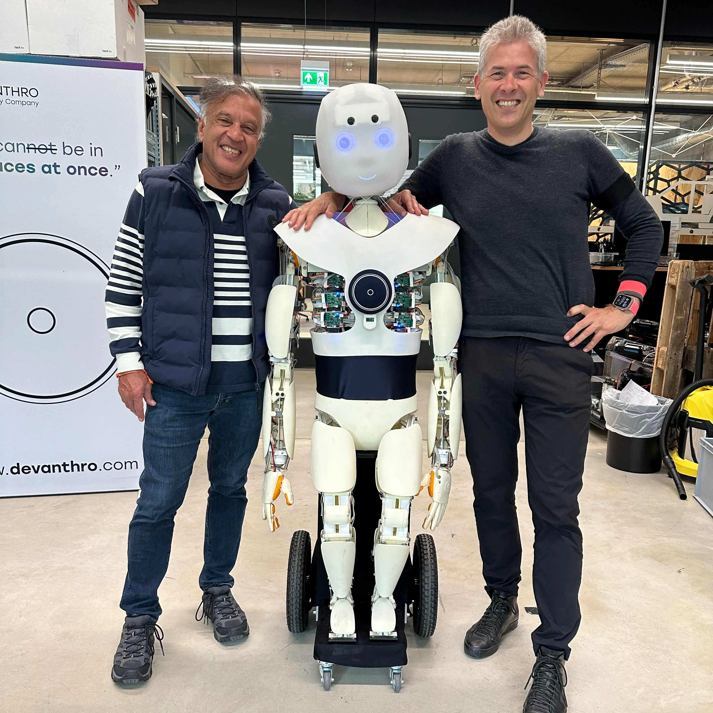
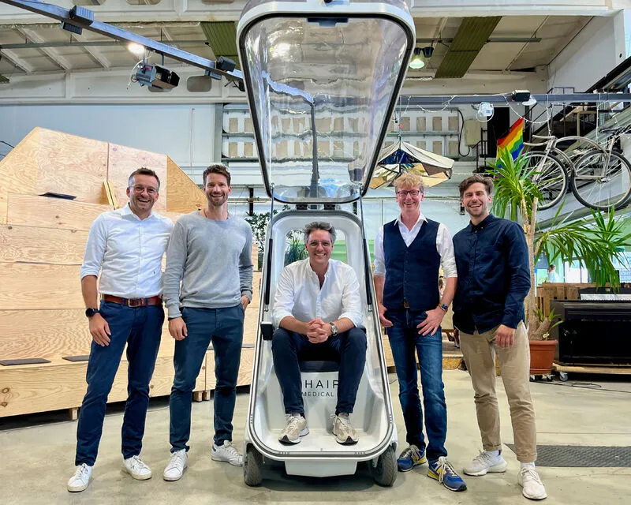
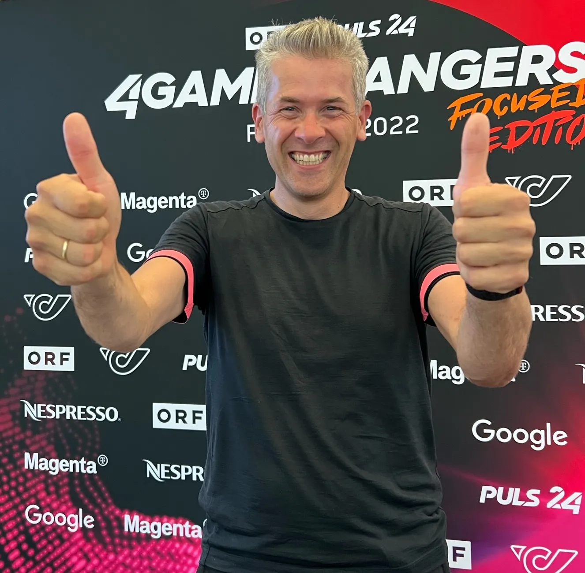
Fresh off the shelf!
Just published my latest book on Generative AI and how it is changing our world.
Do check it out.
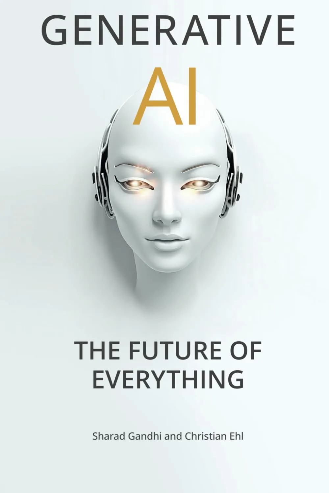